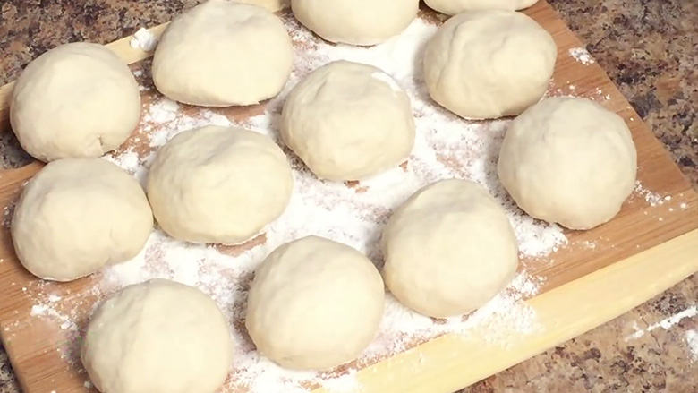
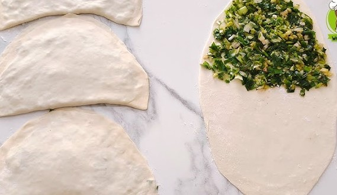

Bolani is a stuffed flatbread from the Afghan cuisine.
It is usually filled with a mix of potatoes, cilantro, and green peppers,
but it can also be filled with pumpkin, red lentils, or chives.
It is usually served with a green chutney and enjoyed as a side dish, or as a snack with a cup of tea.
Ingredients List
Dough:
3 ½ cups all-purpose flour
1 teaspoon salt
1 teaspoon neutral flavored oil
1 cup water, at room temperature
Filling:
1 pound (2 large or 3 small potatoes) boiled, peeled, and mashed
½ cup chopped cilantro
½ cup chopped spring onions
2 tablespoons neutral flavored oil
1 teaspoon ground black pepper
½ teaspoon red pepper flakes
Salt, to taste
Neutral flavored oil, for pan-frying
Prepare Dough:
In a large bowl, mix flour and salt together. Slowly add oil and water and mix until a cohesive ball is formed.
If the dough seems dry, add additional water one tablespoon at a time.
Knead the dough until it is smooth and elastic, about 7 to 10 minutes.
Transfer to a lightly oiled bowl, cover, and set aside for one hour.
Prepare Filling:
Combine mashed potatoes, cilantro, spring onions, oil, black pepper, red pepper flakes, and salt and mix well.
Try to mash the filling so that it is as smooth as possible. Set aside.
Assemble and Cook:
Divide the dough and filling into 6 to 8 portions.
Roll each ball of dough on a lightly floured surface into a large and thin circle, 8 to 10-inches in diameter.

Spread a portion of the filling over half of the circle, leaving a ¼-inch border around the edges.
Fold the dough in half over the filling and press to seal.
Be sure to flatten out any air pockets.

Heat a few teaspoons of oil in a skillet or frypan over medium-high heat.
Transfer bolani to pan and cook until golden brown and crispy on both sides, which should only take a few minutes.